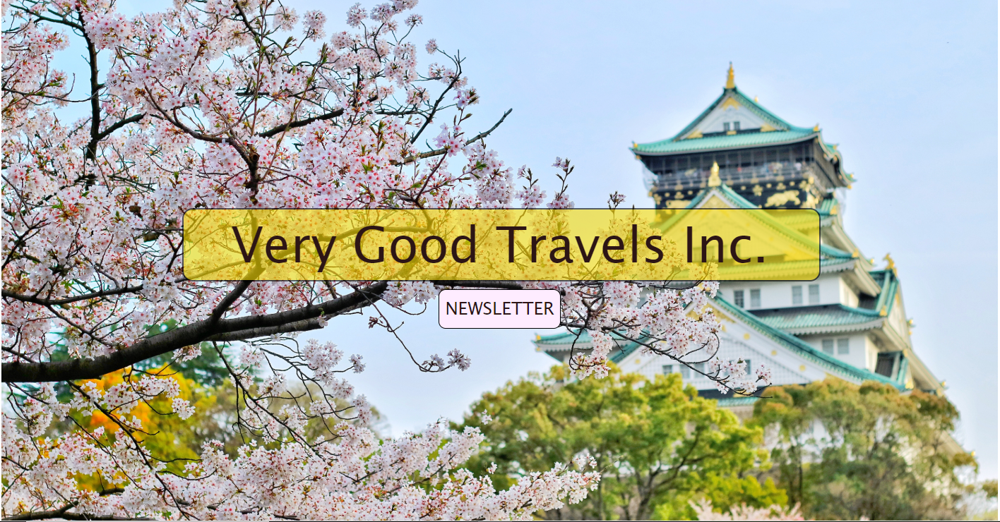

A travel agency is a private retailer or public service that provides travel and tourism related services to the public on behalf of suppliers such as activities, airlines, car rentals, cruise lines, hotels, railways, travel insurance, and package tours. In addition to dealing with ordinary tourists, most travel agencies have a separate department devoted to making travel arrangements for business travelers; some travel agencies specialize in commercial and business travel only. There are also travel agencies that serve as general sales agents for foreign travel companies, allowing them to have offices in countries other than where their headquarters are located.
Pop art is an art movement that emerged in the United Kingdom and the United States during the mid- to late-1950s. The movement presented a challenge to traditions of fine art by including imagery from popular and mass culture, such as advertising, comic books and mundane cultural objects. One of its aims is to use images of popular (as opposed to elitist) culture in art, emphasizing the banal or kitschy elements of any culture, most often through the use of irony. It is also associated with the artists' use of mechanical means of reproduction or rendering techniques. In pop art, material is sometimes visually removed from its known context, isolated, or combined with unrelated material.
Ansel Easton Adams was an American landscape photographer and environmentalist known for his black-and-white images of the American West. Adams helped found Group f/64, an association of photographers advocating "pure" photography that favored sharp focus and the use of the full tonal range of a photograph.
Art is a diverse range of human activities in creating visual, auditory or performing artifacts, expressing the author's imaginative, conceptual ideas, or technical skill, intended to be appreciated for their beauty or emotional power. The three classical branches of art are painting, sculpture and architecture. Music, theatre, film, dance, and other performing arts, as well as literature and other media such as interactive media, are included in a broader definition of the arts. Until the 17th century, art referred to any skill or mastery and was not differentiated from crafts or sciences. In modern usage after the 17th century, where aesthetic considerations are paramount, the fine arts are separated and distinguished from acquired skills in general, such as the decorative or applied arts.
My name is Polina Vertegel. I'm 16 years old and a sophomore in high school. Please let me design your websites because I'm really good at designing websites so your website will turn out really good. Did I mention that I'm really good at designing websites? I'm really good at designing websites. Please hire me! Thanks. 